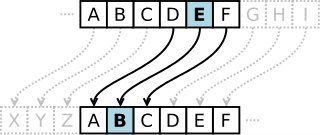
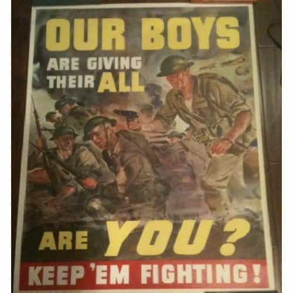

David Garett Brown’s articles about how we deprived the producers of the last Social Justice Wars episode from millions of dollars really struck a chord in our community. It echoed as thousands of comments and reactions in the media, and caused zealous cucks like Jimmy Kimmel to go in overdrive, trying to downplay it.
But the cat is out of the bag. What we write, believe in, and act on brings visible results—recent events like the Stalinist-like propaganda slandering the ROK meetups only confirm it. Our thoughts make them fly off the handle and this is why we must carry on. By following those few steps, we can deal them a tremendous blow if we stand as one:
1. Get off Facebook

We keep saying that it’s a waste of time. You are not a girl looking for attention. What satisfaction do you get from a picture that is “liked”? Are you on the beach in Croatia to relax or make your coworkers jealous?
Get away from that poison, find a way to REALLY deactivate it and resume a normal life. They stored your info preciously and can use it against you, have no doubt about this. Do not give them more.
2. Bring men together
After the Thought Crime Blitzkrieg episode, the white knighting freaks and pierced hags are already back into their Ben & Jerry’s, cat videos, and Jezebel wankathon. But the meetups are a great idea and must take place. You could advertise a “male club” on the forum or even through the comments. Better 5 highly motivated and reliable men than 50 undecisive one-timers. Gather three worthy friends, hold the happy hour once. Ask them to bring three potential candidates for the next meeting, see if they fit. Repeat the operation until a strong, regular circle is established.
The principle: “A is a decent guy, we believe in the same things. B is A’s friend. That is a good start. Let’s bring B for a beer and see what is his view of life.”
3. Stop financing Google
Many companies are trying their best against us, but not many are as try-hard as Google. I know it is handy, I know it is fast, but make the effort. Get another browser, an alternative email address (Protonmail, Tutanota for encrypted mails etc.), a VPN, and another search engine:
I have been using DuckDuckGo for about a year and it works well. If you cannot, keep your research neutral and to a minimum. Disable options that collect information about you.
Just to remind you, this is what Google represents and supports with your money. If that is not a declaration of war, I don’t know what that is:
4. Write letters
Wise words from Assange and Snowden: written mail is the safest way to communicate in our day and age. Or face-to-face meeting in a safe environment.
The internet is (relatively) easy to monitor via keywords, but Barack has only two hands and cannot open or read all the letters that the United States Postal Service receives every day. Still not convinced? Use a code that you create, keep it within your community, and update it regularly. The oldest trick in the book.

The Caesar cipher is millennia-old but has proven its efficiency. Languages such as Python still use it to this day.
5. Keep exposing the lies

“Thank you all for coming. I expect more lies in your articles.”
Share it with friends, but not on PC approved social media. Spread the world on your website or by word of mouth. The digital media will try to silence you. Twitter is digging its own grave trying to control what people have the right to say or not. Talk about it in your circle, propose solutions, hold conferences… why not? Whatever it takes, do not remain silent.
6. Launch counterattacks, even small, every day

Don’t call back the empowered slut after the bang and don’t tell her why. Give the disgusted look at that feminist tub of lard when she walks down the street. Ask a girl with a nose ring if you can hang your keys on it while you go get yourself a beer. Destroy their arguments, make the hamster wheel explode, and go chase some real skirt with as much patriarchy as possible.
We attack what we hate, but we must reward what we respect. Lightly compliment your girl’s feminine outfit or the meal your wife cooked you. Encourage the girl that tries to (really) lose weight. Teach something you deem valuable to your children. Let a good worker know when he has done well.
7. Stay active

Even if we are at war, it needs to be “business as usual” in our ranks. Remain disciplined. Find an alternative way to create money to get away from debt and government shackles. Become more anti-fragile. Learn something new. Work out, eat well, sleep, read and fight on. Focus on the big picture and do not bicker over nonsense with allies.
8. Change your source of information
Don’t give those muppets money through your clicks. The Independent is in trouble and will soon only publish online as they lost more than 90% of their readership in 25 years. It does not come as a surprise that they penned around 10 different articles corroborating lies about Roosh and our meetups.
Check which media group lied about our meetup with no proof, cross them as “unreliable source of information” or “fiction.” If they lied about some guys going for a beer, how many more lies are they force feeding you? Check who owns them and their past record about the issue at hand.
9. Witness a healthy society in action
Get out of Western Europe and the Anglosphere for a bit if you are still hesitating to take the plunge. See with your own eyes an alternative world that is not politically correct and globalist. We cover masculine principles and theorize a lot. But seeing an actual society based on it is mind-blowing and some well-needed fresh air.
Nothing can describe what it is like to hear a Lithuanian 20 year-old girl with long, blond hair, high heels, and a dress telling you “I hate feminists.”
10. Stay alert in your romantic life
Protect yourself. Keep evidence of texts and conversations. Use recording devices on the workplace and in your private life if you feel the need. Pay attention to red flags and tell signs. Weigh the options available, keep a clear head, and do not take an obvious risk for sex that you can get elsewhere.
 If you like this article and are concerned about the future of the Western world, check out Roosh's book Free Speech Isn't Free. It gives an inside look to how the globalist establishment is attempting to marginalize masculine men with a leftist agenda that promotes censorship, feminism, and sterility. It also shares key knowledge and tools that you can use to defend yourself against social justice attacks. Click here to learn more about the book. Your support will help maintain our operation.
If you like this article and are concerned about the future of the Western world, check out Roosh's book Free Speech Isn't Free. It gives an inside look to how the globalist establishment is attempting to marginalize masculine men with a leftist agenda that promotes censorship, feminism, and sterility. It also shares key knowledge and tools that you can use to defend yourself against social justice attacks. Click here to learn more about the book. Your support will help maintain our operation.
Read More: 10 Ways To Fight Back Against Feminism